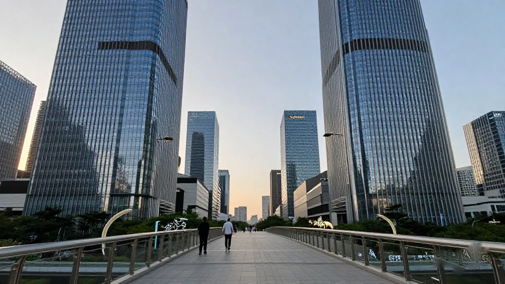
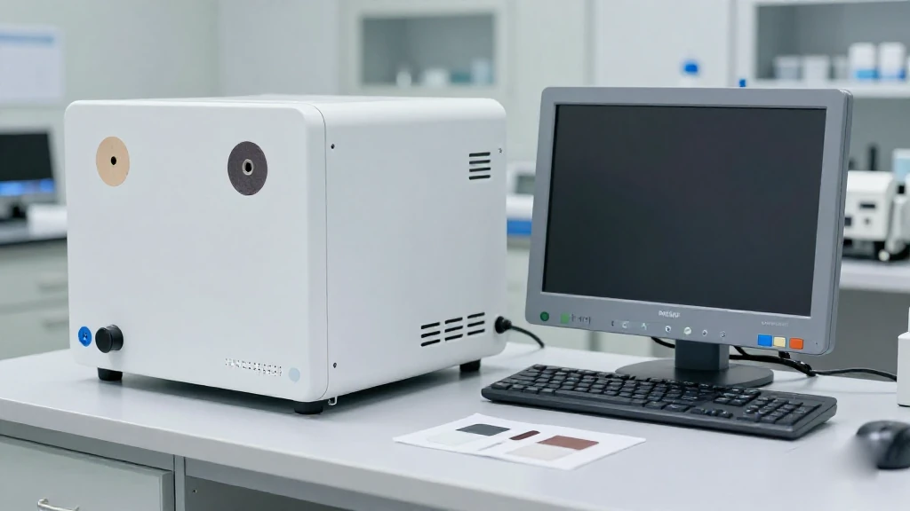
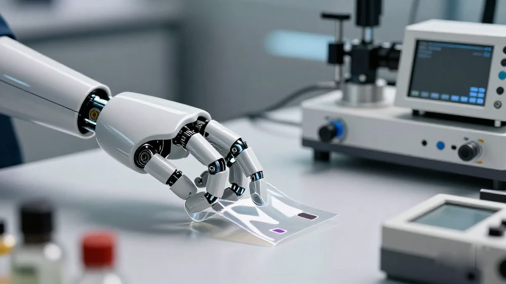
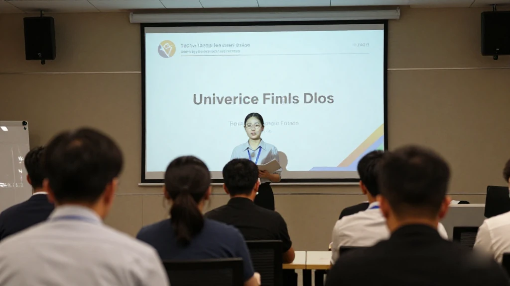
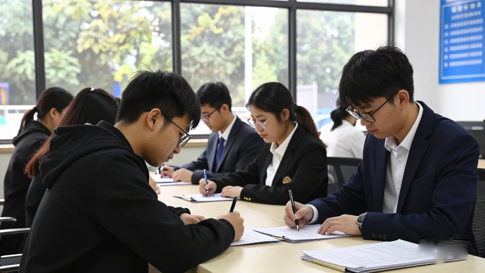
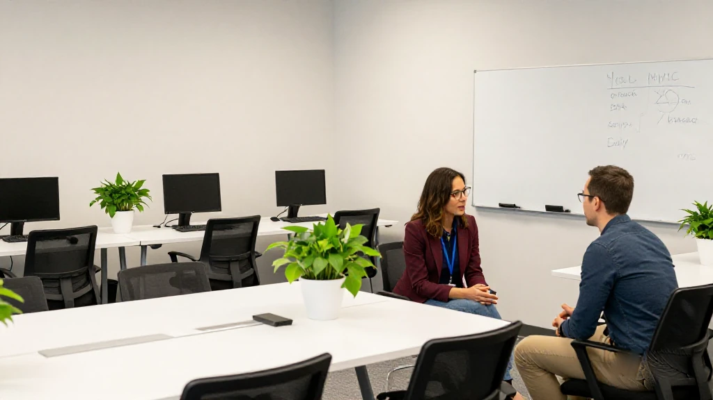

圖片由 AI輔助創作Image by AI
【鄭哥點評】欄目：鄭哥博客點評｜日期：2026-11-05
今日五條，三條深圳、兩條廣州。兩筆融資，一筆億元級、一筆幾千萬元；兩道閘，一道開給人、一道開給殼；仲有一場升格做全球賽嘅大賽。擺埋一齊睇：錢追硬件，政策追人同載體。

圖片由 AI輔助創作Image by AI
一、深圳腦機接口：一個癱瘓病人重新抬起手
深圳南山的微靈醫療做植入式腦機接口，今年8月完成超億元融資，君重資本領投；之前高榕資本等機構都入過場。創辦人李驍健做腦科學廿幾年，中科院生物物理所出身，2018年回國，2019年成立微靈。
佢揀嘅路同馬斯克嗰種唔同。Neuralink 主打功能替代：用念力控制光標、輪椅、機械臂，但你自身受損嘅運動功能未必返嚟。李驍健講嘅係神經修復：靠腦信號解析加訓練，引導殘存網絡重新組織。今年6月，一名腦幹出血致閉鎖綜合症嘅病人接受全植入式腦機接口手術，術後兩星期手指開始微動，之後可做手勢、抬手腕，三個月左右練操作鼠標。團隊強調「自由活動」：唔係外骨骼帶住隻手動，係病人自己控制，關掉系統仍做得到部分自主動作。
來源：21世紀商業評論《深圳腦科學教授，拿下億元融資》，2026年11月3日｜https://www.21jingji.com/article/20261103/herald/6f7c409ff6f6b1e58e70344a61a2cea6.html

圖片由 AI輔助創作Image by AI
二、電子皮膚：賽感科技拿了數千萬元Pre-A++
另一筆細好多。賽感科技（深圳）完成數千萬元 Pre-A++ 輪，東湖高新投資領投，11月3日經科創板日報披露。2023年成立，做柔性傳感器同電子皮膚，用於人形機器人、消費電子、汽車電子同醫療健康。
兩筆錢講同一件事：資本追住可量產、可入醫院、可裝上機械人嘅硬件。本體最貴嗰幾樣——關節、減速器、觸覺——全部係硬件，觸覺尤其難：一層膜要柔性、耐用、可標定。冇觸覺，抓取只能靠視覺估位置。
Pre-A++ 本身有信息：公司走過幾輪小額融資，投資方睇嘅係工藝良率同客戶驗證。呢類公司藏在產業鏈中間，唔出名，但機械人公司換供應商，往往就換咗佢。
來源：科創板日報《賽感科技完成數千萬元Pre-A++輪融資》，2026年11月3日｜https://finance.eastmoney.com/a/202611033920394749.html

圖片由 AI輔助創作Image by AI
三、廣州科創大賽升格全球賽：441個項目、八成初創
廣州嗰邊，賽事升級。2026年廣州科技創新創業大賽全球賽暨港科大百萬獎金創業大賽廣州賽，決賽在南沙打完，由市科技局同港科大聯合主辦，霍英東研究院、科技進步基金會承辦。呢條線由2022年港澳台賽、2024年同港科大融合，今年升做全球賽。
本屆徵集441個項目，較上屆增20.8%，覆蓋人工智能、高端裝備、生物醫療、新材料。港澳台賽道261個（香港214、澳門28、台灣19）；首次開設嘅海外賽道有30幾個國家和地區180個項目。超八成來自成立未滿三年嘅初創企業，或連主體都未註冊嘅團隊。
來源：中國科學報《2026年廣州科技創新創業大賽全球賽舉行》，2026年11月2日｜https://news.sciencenet.cn/sbhtmlnews/2026/11/391875.shtm

圖片由 AI輔助創作Image by AI
四、南沙港澳青創補貼：11月1日起申報，最長兩隻月
廣州南沙，錢真係擺出來了。南沙區人社局10月29日發通知：2026年度港澳青年就業創業補貼，申報期11月1日至12月31日，在「南沙@i企」網上報。對象係45歲及以下嘅港澳居民，永久同非永久性都計；台灣青年、華僑青年及佢哋創辦嘅企業同等待遇。
創業補貼係階梯式：首次到南沙經營滿6個月，一次性2萬元；滿一年成長明顯5萬；滿兩年10萬；滿三年15萬。另外三條配套：拎到港澳特區或市政府資助開公司，按1:1配套最高30萬；入到市級以上雙創大賽總決賽，一次性5萬；貸款按實際利息50%貼息，最高30萬。
來源：廣州市南沙區人力資源和社會保障局《關於開展2026年度廣州市南沙區促進港澳青年就業創業補貼申領工作的通知》，2026年10月29日｜http://www.gzns.gov.cn/zwgk/rdzt/hgazczl/cyzc/hgazxzc/gaqncxcy/content/post_11076218.html

圖片由 AI輔助創作Image by AI
五、光明區孵化器認定：11月2日開閘，11月27日截
深圳光明區亦開咗一道閘，但開給載體，唔係開給創業者。區科技創新局10月30日發布《2026年光明區科技型企業孵化器認定申報指南》，受理11月2日至11月27日，地點光明街道牛山路公共服務平台5樓562室，張工0755-88210472。
要交五份表：認定申報書、運營管理人員清單、創業導師清單、科技服務機構清單、在孵企業清單。呢五份表就係運營方嘅自畫像：幾多人全職做運營、幾個導師落場、幾間機構靠得住。填得靚嘅本身就係篩選器。
科學城做源頭，孵化器做第一道接駁。認證名單係可靠嘅選址地圖，唔係租個寫字樓掛個牌就叫孵化器。做運營嘅留意：11月2日到27日只係三個半星期。
來源：深圳市光明區科技創新局《關於發布〈2026年光明區科技型企業孵化器認定申報指南〉的通知》，2026年10月30日｜https://www.szgm.gov.cn/gmkjcxj/gkmlpt/content/13/13047/post_13047016.html
圖片由 AI輔助創作Image by AI
六、鄭哥點評
第一，兩筆融資放埋一齊睇，估值模型真係變咗。微靈講嘅係植入手術同二十幾間三甲醫院，賽感講嘅係柔性膜良率同客戶驗證。資本唔係忽然愛上硬件，係發現軟件嗰套「用戶增長」故事講唔落去——腦機接口要入醫院，電子皮膚要上產線，兩樣都係慢生意。一旦過關，護城河唔係燒錢燒得出嚟。
第二，兩道閘，一道買人、一道買殼。南沙嘅30萬配套、貼息、每月補助，直接落喺港澳青年口袋，見效快；光明認定孵化器，錢落喺運營方，慢但決定三年後仲有冇人留低。補貼係止痛藥，載體係地基。
第三，大賽嗰條數，重點唔係200萬。441個項目、八成初創，獎金200萬；但四年累計幫參賽企業拿到4.2億投融資——相差兩個數量級。獎金養唔活一間公司，對接可以。去比賽唔好淨係準備PPT，準備三個月嘅交付紀錄：邊個客戶試過、講咗咩、改咗邊一版。評審第二條問題通常就係呢樣。
圖片由 AI輔助創作Image by AI
\[Zheng Ge's Take\] Column: Zheng Ge's blog commentary | Date: 2026-11-05
Five items today, three from Shenzhen and two from Guangzhou. Two funding rounds, one at the hundred-million level and one in the tens of millions; two application windows, one opened for people and one for incubators; and a startup contest that has been upgraded into a global one. Put together, money is chasing hardware, policy is chasing people and the containers that hold them.
圖片由 AI輔助創作Image by AI
1. Shenzhen brain-computer interface: a paralysed patient lifts his hand again
Micro-Link Medical, a Shenzhen company working on implantable brain-computer interfaces, closed a funding round of more than 100 million yuan in August, led by Junzhong Capital; Gaorong Capital, Life Science Park Venture, CDH Investments and Leaguer Capital had invested earlier. Founder Li Xiaojian has spent more than two decades in brain science, trained at the Institute of Biophysics of the Chinese Academy of Sciences and formerly a researcher at Georgia Medical College and Northwestern University Medical School in the United States. He returned to China in 2018, worked at the Shenzhen Institutes of Advanced Technology while looking for an opening, and set up Micro-Link in 2019.
The route he picked differs from Elon Musk's. Neuralink focuses on functional replacement: thought drives a cursor, a wheelchair or a robotic arm, and the machine performs the task, while the patient's own damaged motor function may never return. Li talks about neural repair: after brain injury some surviving neural networks remain plastic, and decoding brain signals combined with sustained training can guide them to reorganise. In June this year a patient with locked-in syndrome caused by a brainstem haemorrhage received a fully implanted brain-computer interface. About two weeks after surgery the fingers began to twitch; later he could form individual gestures and lift his wrist, and after roughly three months he started practising mouse control. The team stresses free movement: not an exoskeleton dragging the hand along, but the patient's own control, and even with the system switched off some voluntary movement remains.
Source: 21世紀商業評論《深圳腦科學教授，拿下億元融資》，2026年11月3日 | https://www.21jingji.com/article/20261103/herald/6f7c409ff6f6b1e58e70344a61a2cea6.html
圖片由 AI輔助創作Image by AI
2. Electronic skin: Saigan Technology raises tens of millions in Pre-A++
The second round is far smaller but points the same way. Saigan Technology (Shenzhen) has raised tens of millions of yuan in a Pre-A++ round led by Donghu High-Tech Investment, disclosed by Star Market Daily on 3 November. Founded in 2023, the company makes a new generation of high-performance flexible smart sensors and electronic skin, used in four areas: humanoid robots, consumer electronics, automotive electronics and healthcare.
The sizes differ by orders of magnitude, yet the two cheques say the same thing: capital is chasing hardware that can be manufactured, admitted into hospitals and mounted on robots, not a slide deck. Anyone working in embodied intelligence knows the expensive parts of a body are all hardware: joints, reducers, touch. Touch is the hardest, because one film has to be flexible, durable and calibratable at the same time. Electronic skin has long been treated as the precondition for robots that work by feel; without it, grasping relies on estimating position by camera.
For a startup, the round label itself carries information. A Pre-A++ means the company has already been through several small rounds and is not yet at the stage of telling a scale story; what investors want to see is process yield and customer validation. Shenzhen has many companies like this buried in the supply chain, unknown to the public, yet when a robot maker changes supplier it often changes to them.
Source: 科創板日報《賽感科技完成數千萬元Pre-A++輪融資》，2026年11月3日 | https://finance.eastmoney.com/a/202611033920394749.html
圖片由 AI輔助創作Image by AI
3. Guangzhou's startup contest goes global: 441 projects, most of them young
In Guangzhou the contest itself has been upgraded. The finals of the 2026 Guangzhou Science and Technology Innovation and Entrepreneurship Competition global edition, held jointly with the HKUST One Million Dollar Entrepreneurship Competition Guangzhou, have wrapped up in Nansha. The city's science and technology bureau and HKUST co-hosted, with the HKUST Fok Ying Tung Research Institute and the Guangzhou Science and Technology Progress Foundation as co-organisers. The line is not new: a Hong Kong, Macao and Taiwan track started in 2022, merged with the HKUST million-dollar contest in 2024, and this year was lifted into a global event.
The numbers are concrete. A total of 441 projects entered, up 20.8 per cent on last year, spanning artificial intelligence, advanced equipment manufacturing, biomedical technology and new materials, all strategic emerging industries Guangzhou has prioritised. The Hong Kong, Macao and Taiwan track drew 261 entries (214 from Hong Kong, 28 from Macao, 19 from Taiwan), while the overseas track, opened for the first time, attracted 180 projects from more than thirty countries and regions including the United States, Singapore, Australia and Britain. More than eighty per cent of entries came from startups less than three years old, or from teams that have not yet registered a company at all.
Source: 中國科學報《2026年廣州科技創新創業大賽全球賽舉行》，2026年11月2日 | https://news.sciencenet.cn/sbhtmlnews/2026/11/391875.shtm
圖片由 AI輔助創作Image by AI
4. Nansha's Hong Kong and Macao startup subsidies open from 1 November
In Guangzhou's Nansha district the money is genuinely on the table. The district's human resources and social security bureau issued a notice on 29 October: applications for the 2026 round of Hong Kong and Macao youth employment and entrepreneurship subsidies run from 1 November to 31 December, all filed online through the Nansha at iqi platform. Eligible are Hong Kong and Macao residents of Chinese nationality aged 45 or under, permanent and non-permanent alike; Taiwanese youth and overseas Chinese youth developing in the district, and companies they found, get the same treatment.
The startup side is a ladder. A first move into actual operations in Nansha, sustained for six months, brings a one-off 20,000 yuan startup grant. A year of operation with clear growth brings 50,000 yuan; two years with staged results, 100,000 yuan; three years with notable results, 150,000 yuan. Companies that play a demonstrative role and win industry recognition can apply for a one-off 300,000 yuan outstanding development award, capped at ten companies a year. Three further lines: a team that has received funding from the Hong Kong or Macao SAR governments or from a municipal government at prefecture level or above and uses that project to set up a company gets one-to-one matching up to 300,000 yuan; reaching the final of a prefecture-level or higher startup contest brings a one-off 50,000 yuan; and bank loan interest is subsidised at 50 per cent, up to 300,000 yuan in total.
Source: 廣州市南沙區人力資源和社會保障局《關於開展2026年度廣州市南沙區促進港澳青年就業創業補貼申領工作的通知》，2026年10月29日 | http://www.gzns.gov.cn/zwgk/rdzt/hgazczl/cyzc/hgazxzc/gaqncxcy/content/post_11076218.html
圖片由 AI輔助創作Image by AI
5. Guangming's incubator accreditation: open from 2 November, closes 27 November
Shenzhen's Guangming district has opened a gate as well, but this one is for carriers, not founders. The district's science and technology innovation bureau published its 2026 accreditation guide for technology enterprise incubators on 30 October. Applications are accepted from 9am on Monday 2 November to 6pm on Friday 27 November, at Room 562, fifth floor, Niu Shan Road public service platform in Guangming subdistrict; the contact is Mr Zhang on 0755-88210472.
There is a list of documents: the accreditation application form, a roster of operations and management staff, a roster of contracted startup mentors, a roster of contracted technology service agencies, and a list of tenant companies. Those five forms are effectively a self-portrait of a supply chain: how many people work full time on operations, how many mentors actually turn up, how many dependable agencies help tenants with tax, accounting and intellectual property, and how many companies are resident. The government will not interview every startup, but an operator able to fill those five forms well is itself a filter.
Guangming's role has been clear for several years: the science city does the source work, incubators do the first connection. For founders, an accredited list is a reliable map when choosing where to sit, because accreditation carries hard requirements on facilities and on mentors and service agencies; renting an office and hanging a sign does not make an incubator. For operators, watch the calendar: 2 to 27 November is three and a half weeks.
Source: 深圳市光明區科技創新局《關於發布〈2026年光明區科技型企業孵化器認定申報指南〉的通知》，2026年10月30日 | https://www.szgm.gov.cn/gmkjcxj/gkmlpt/content/13/13047/post_13047016.html
圖片由 AI輔助創作Image by AI
6. Zheng Ge's Take
First, put the two rounds side by side and the valuation model really has changed. Micro-Link's hundred million plus, raised in August, is about implant surgery, about more than twenty top-tier hospitals, about several hundred clinical cases. Saigan's tens of millions are about yield on a flexible film and customer validation. Capital has not suddenly fallen in love with hardware; it has found that the software story of user growth no longer holds. A brain-computer interface has to get into hospitals, electronic skin has to get onto production lines, and both are slow businesses. The advantage of a slow business is that once you are through, the moat cannot be burned into existence by a competitor's cash.
Second, two gates: one buys people, one buys containers. Nansha's 300,000 yuan matching grant, 50 per cent interest subsidy and 1,500 yuan monthly allowance go straight into the pockets of Hong Kong and Macao young people: fast, visible, easy to report. Guangming's incubator accreditation puts money and resources into operators: slow, unglamorous, but it decides whether anyone is still there in three years. Founders need to tell them apart. A subsidy is a painkiller; a carrier is a foundation. Take the painkiller, but you cannot skip the foundation.
Third, the contest number that matters is not the 2 million. Four hundred and forty-one projects, more than eighty per cent of them young, twenty-five in the final, 2 million yuan in cash prizes. Yet over four years the event has helped participants raise 420 million yuan: two orders of magnitude apart. Prizes do not keep a company alive; introductions can. So when you enter a contest, do not only polish the deck. Bring the delivery record of your last three months: which customer tried it, what they said afterwards, which version you changed. That is usually the panel's second question.